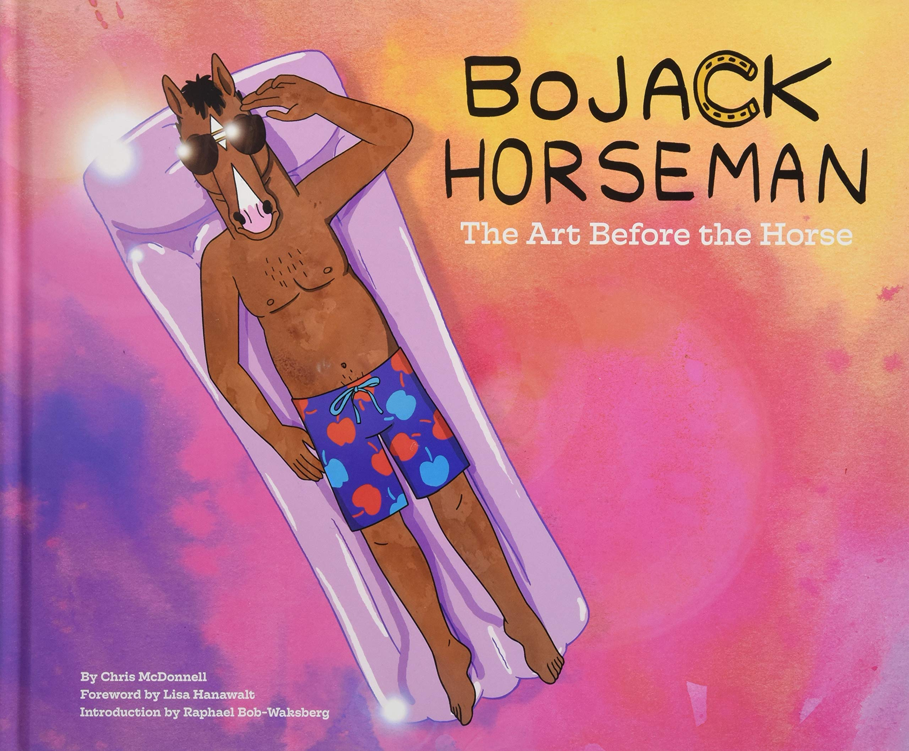
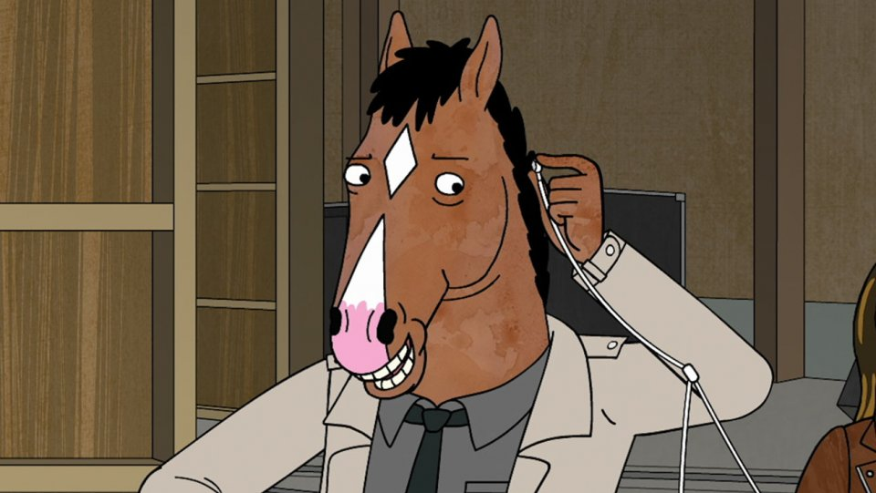
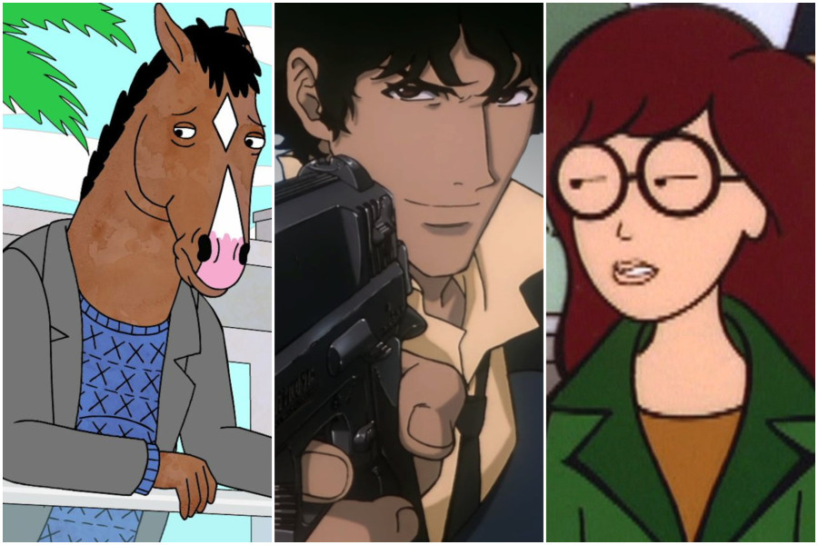
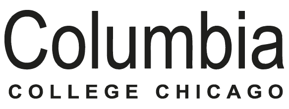

The Art Before the Horse
In "Fish Out of Water" [S3E04] although BoJack can't speak, he by no means stops trying to communicate. This left some interactions he had open to a certain amount of interpretation. To combat that early on, we scrutinized the noise that accompanied BoJack's movements to try to bring more clarity: The whooshing of the water around him. If BoJack was surprised or angry, he would have a higher pitched abrasive sound of his flailing arms, as opposed to a calm drift for his sadder moments or shrugs.
Press
BoJack Horseman wins Best Animated Series at 2019 Critics Choice Awards
The Hollywood Reporter
BoJack Horseman wins General Audience and Voice Acting at 46th Annie Awards
Deadline
"Stupid Piece of Sh*t Nominated for General Audience and Editing for 45th Annie Awards
Variety
The 50 Best Animated series of All Time
IndieWire
2018 Nominee
Outstanding Achievement for Editorial in an Animated Television/Broadcast Production
Episode: BoJack Horseman: Stupid Piece of Sh*t (2017)
BFA in Film from Columbia College Chicago

"BoJack Horseman"
Editorial Department (Netflix), 2014-2018
"Greatest Party Story Ever"
Editorial Department (MTV), 2016